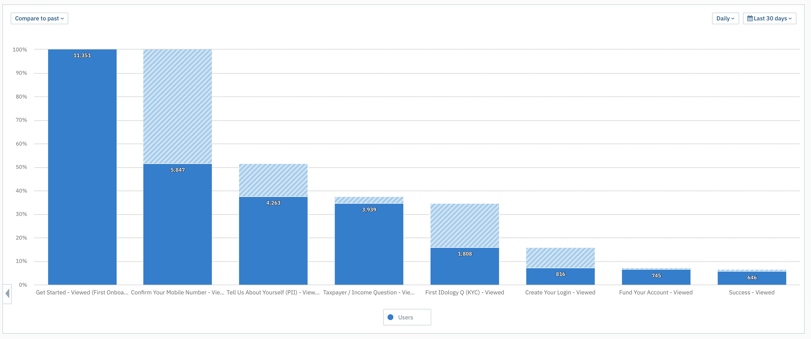
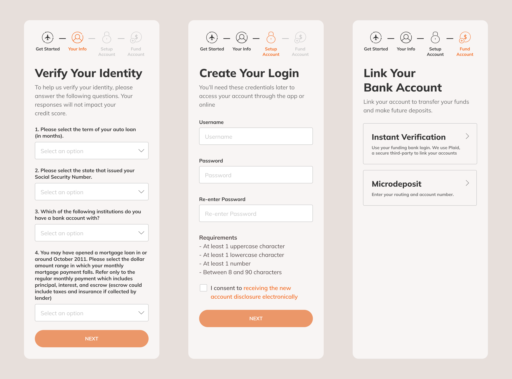
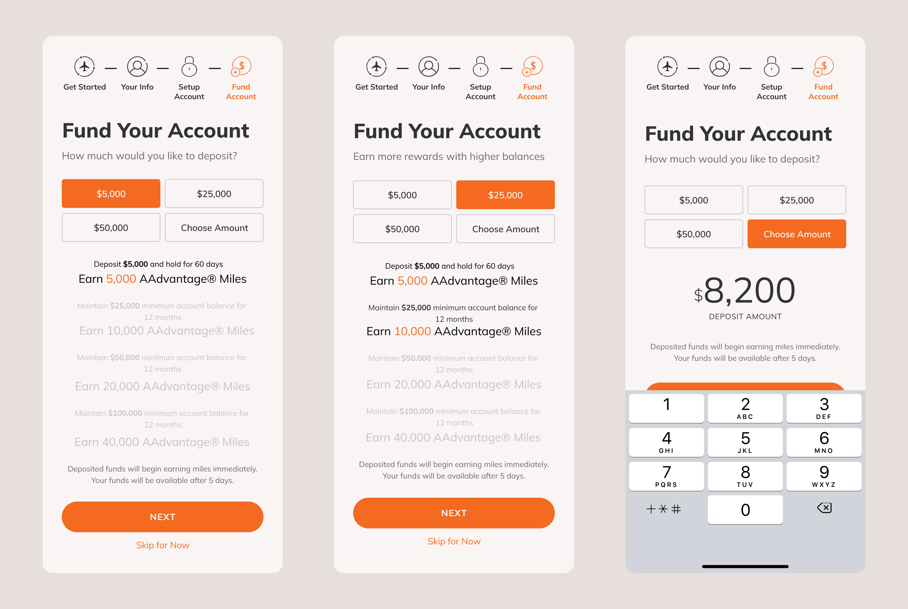

Building Trust to Improve Sign-Up Conversion

In 2019, a regional bank with over $40B in managed assets, had just launched a new digital attacker bank that offered a travel-oriented savings account that accrued airline miles instead of interest.
While the launch was driving prospects to the website, they were dropping off at high rates once they entered the sign-up flow. I heard about these issues during a sprint review and volunteered to help, joining the Product Manager and Technical Lead.
I led the effort to research drop-off drivers and redesign onboarding to improve sign-up converstion by targeting drop-offs.
I created a metrics dashboard for step-by-step visibility into drop-offs to serve as a source-of-truth for my team and leadership. I designed a new end-to-end flow which improved conversion by 4% and also reduced customer service calls as a bonus.
Uncovering Drop-Off Drivers
I spoke to customer proxies and reviewed documents to understand why prospects might drop-off. I interviewed a Customer Support Lead, reviewed call logs, audited the current-state, and analyzed other leading digital attacker competitors.
"Is this a real bank? I’ve never heard of them before”Customer Support Lead, summarizing customer calls
-
Jarring Transition Between Website and Onboarding
The website was modern and polished, but onboarding had a completely different, outdated experience. It felt like being taken to a dingy backroom to finish your sign-up after seeing a nice showroom. The bank's low brand recognition meant that they had to earn user trust through the process rather than assuming it from the start.
-
Asking for Deposits Too Soon
The current-state tried to move too fast. It asked users to commit to an initial deposit too early in the flow, before login credentials and before a funding bank was set. The current thought process was that bank needed to capture the deposit as soon as possible, but this spooked customers who needed more time to get comfortable.
Metrics

The client could see how many entered sign-up and how many accounts were created, but didn't have visibility into drop-offs at each step in onboarding. I created a funnel chart to track progress within onboarding so my team and leadership could also track drop-offs at a step-by-step level to understand where users were dropping off the most - where we might make the biggest impact.
Building User Trust to Reduce Drop-Offs
I designed a rework of onboarding to help customers feel more comfortable and reduce drop-offs. And for deposits, the more trust built, the more users would feel comfortable depositing. To facilitate conversations with engineering team, I redesigned the onboarding process end-to-end to create a north star.

Ease Users In Rather Than Ask for Deposits Upfront
Onboarding should build rapport and ease users in by making small asks first to get users comfortable. Asking for a big commitment, a deposit, was scaring some users away. I moved the initial deposit later in the flow, right after they connected their funding bank. In addition, I added a step to collect the user's frequent flier # so that we could remind them of the value they could get and ensure they would receive their rewards.
We hypothesized that since users are already wary, asking for a big commitment could scare them away. I moved the initial deposit later in the process after they connected their funding bank so they would know that a transfer was possible before deciding on a deposit. In addition, I added an optional step to gather the user's frequent flier # to lean on partner credibility and reduce the likelihood they forget to connect their account later and be unable to receive their miles.
Unified Brand Experience
The home page and onboarding felt like two completely different companies created them. We needed to make the Bask experience feel as one single entity. I created a Figma design system to match the visual language of the website and used in the new sign-up experience to keep consistent between the two.
Transparency
Users needed to fill in a larger number of fields to complete onboarding, including a set of Know Your Customer questions. To fight field fatigue and data privacy concerns, I added a short explainer on each step to explain why and how the information would be used and a progress tracker to break down the process into smaller milestones.
Increasing Initial Deposits
New customers could earn a hefty bonus for maintaining over certain balances. While the rewards tiers were mentioned on the website, users had to remember the reward tiers in the previous experience.
I saw an opportunity for a win-win. I designed a new initial deposit screen that re-surfaced deposit and reward tiers to nudge users toward higher initial deposits, and have one less reason to go back to the website (and potentially drop-off!).

Outcomes
I partnered with engineering to implement the first wave of features to build towards the north star I designed. In the first release, the client released the visual update and reordered onboarding steps. Our changes conversion improve by 6% and continued to support us to continue building a more data-driven approach to drive product decisions. Unfortunately the COVID-19 pandemic reduced travel demand and the new initial deposit screen was never developed.
Beyond the design itself, I helped the client grow its data-driven design culture beyond metrics by introducing user testing as a standard practice to validate and refine more complex features before release.